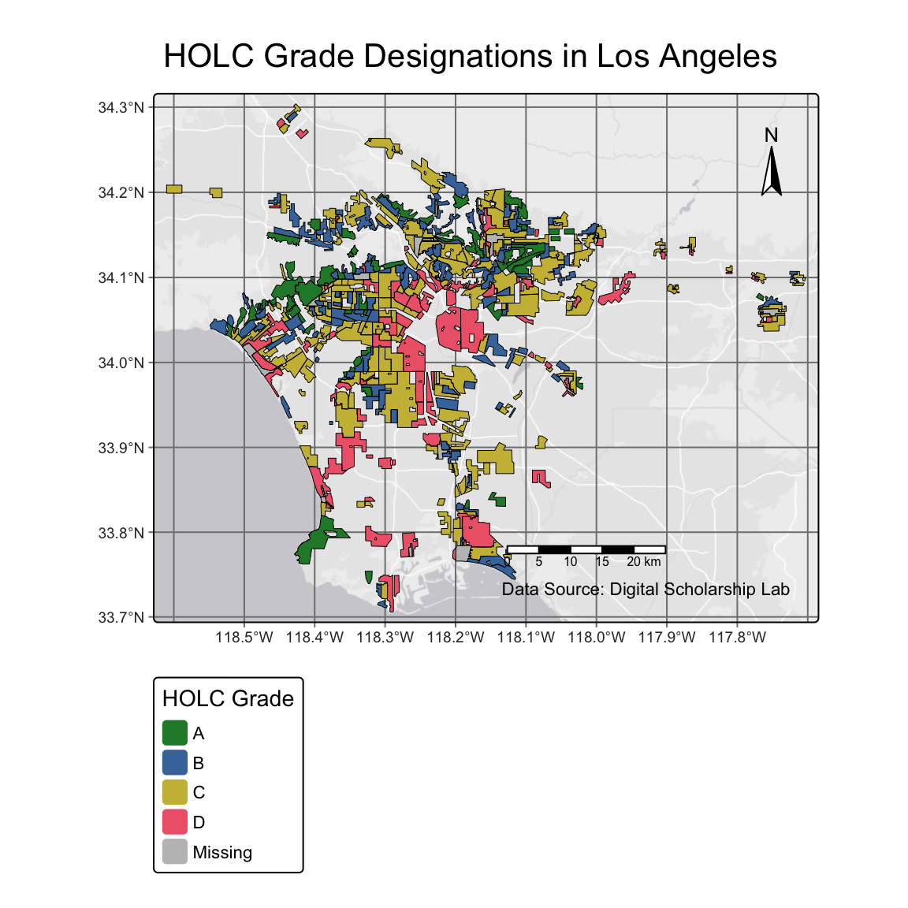
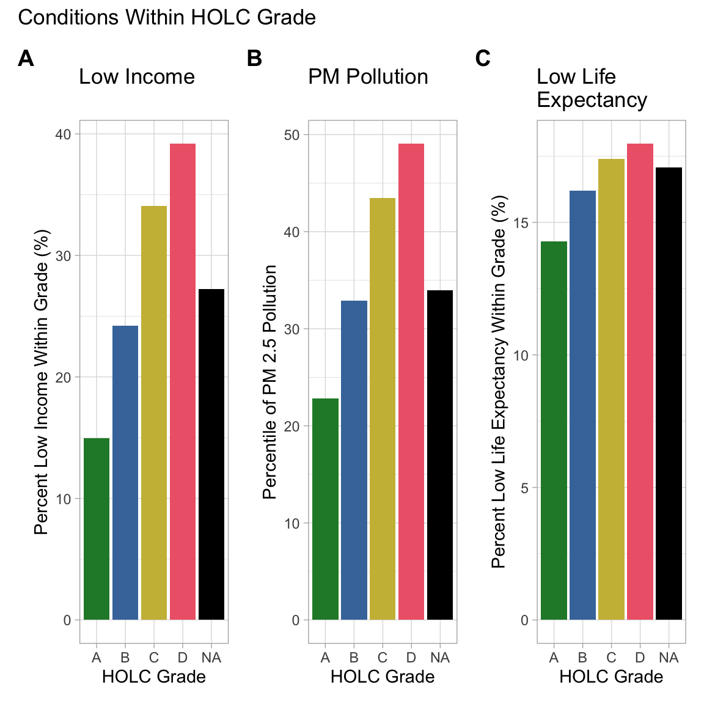
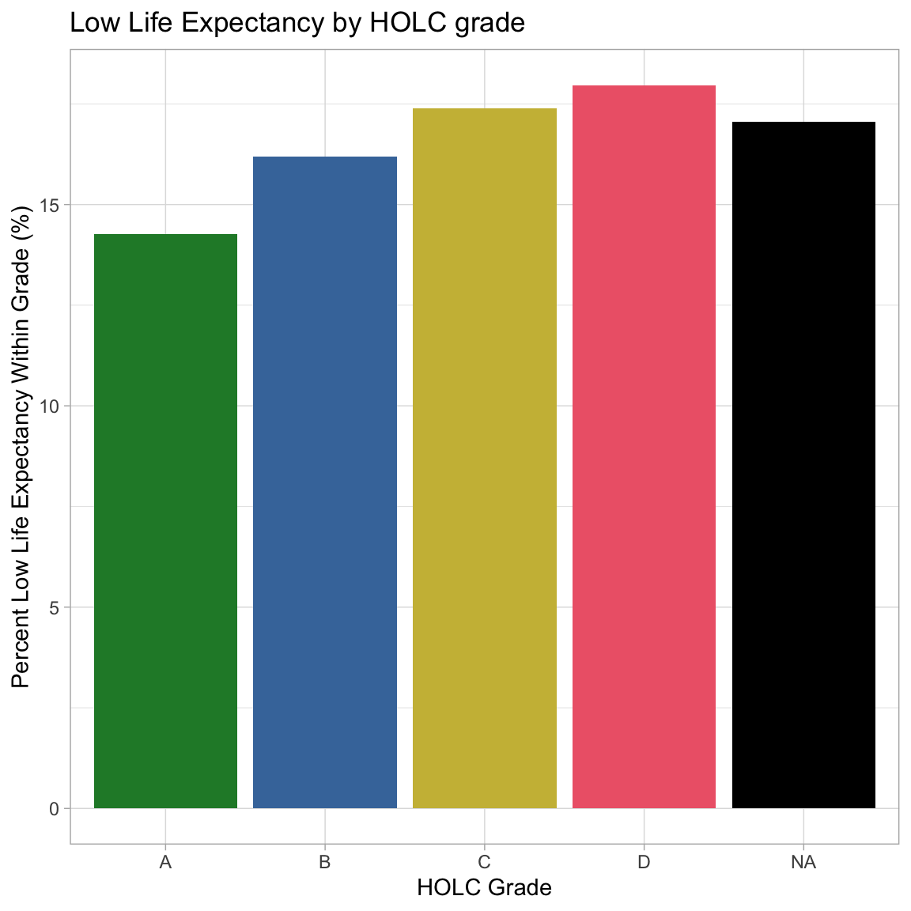
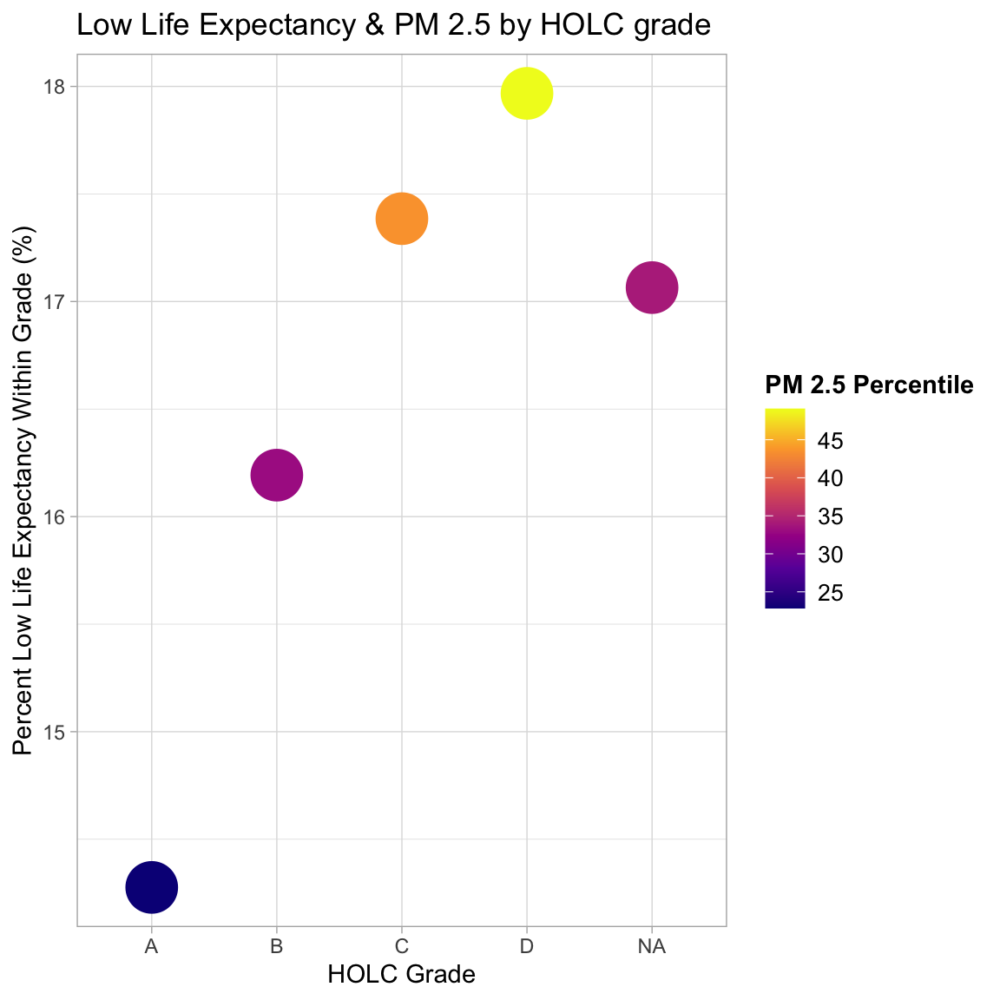
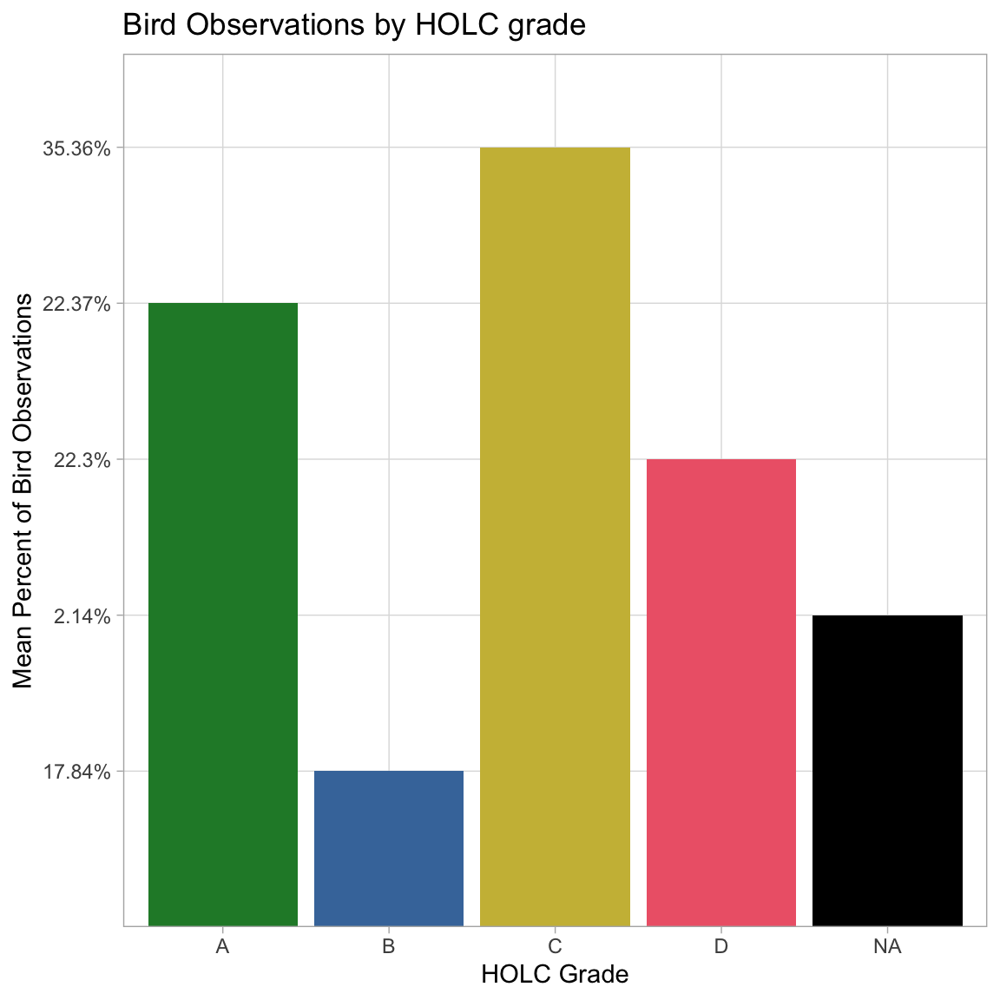

library(tidyverse)library(sf)library(tmap)library(here)library(viridisLite) # colorslibrary(janitor)library(kableExtra) # pretty table# load in data #ejscreenej <-st_read(here::here("data", "ejscreen", "EJSCREEN_2023_BG_StatePct_with_AS_CNMI_GU_VI.gdb"))
Reading layer `EJSCREEN_StatePctiles_with_AS_CNMI_GU_VI' from data source
`/Users/caitlinnordheim/Desktop/UCSB/Coursework/eds-223/EDS223-HW2/data/ejscreen/EJSCREEN_2023_BG_StatePct_with_AS_CNMI_GU_VI.gdb'
using driver `OpenFileGDB'
Simple feature collection with 243021 features and 223 fields
Geometry type: MULTIPOLYGON
Dimension: XY
Bounding box: xmin: -19951910 ymin: -1617130 xmax: 16259830 ymax: 11554350
Projected CRS: WGS 84 / Pseudo-Mercator
# check validunique(st_is_valid(ej)) # TRUE, yay
[1] TRUE FALSE
# holcholc <-st_read(here::here("data", "mapping-inequality", "mapping-inequality-los-angeles.json")) %>%st_make_valid() # was not valid before, is now
Reading layer `mapping-inequality-los-angeles' from data source
`/Users/caitlinnordheim/Desktop/UCSB/Coursework/eds-223/EDS223-HW2/data/mapping-inequality/mapping-inequality-los-angeles.json'
using driver `GeoJSON'
Simple feature collection with 417 features and 14 fields
Geometry type: MULTIPOLYGON
Dimension: XY
Bounding box: xmin: -118.6104 ymin: 33.70563 xmax: -117.7028 ymax: 34.30388
Geodetic CRS: WGS 84
Reading layer `gbif-birds-LA' from data source
`/Users/caitlinnordheim/Desktop/UCSB/Coursework/eds-223/EDS223-HW2/data/gbif-birds-LA/gbif-birds-LA.shp'
using driver `ESRI Shapefile'
Simple feature collection with 1288865 features and 1 field
Geometry type: POINT
Dimension: XY
Bounding box: xmin: -118.6099 ymin: 33.70563 xmax: -117.7028 ymax: 34.30385
Geodetic CRS: WGS 84
# check and make validunique(st_is_valid(bird)) # TRUE, yay
[1] TRUE
# let's make a custom, colorblind-friendly color palette for the grades# hex codes come from colorblind-friendly Paul Tol color palette (the "bright" one)grade_colors <-c("A"="#228833","B"="#4477AA","C"="#CCBB44","D"="#EE6677","NA"="black","NA_real"="black")
Part 1
Part 1.1
Create a map of historical redlining neighborhoods
m1.1<-tm_shape(holc) +# import holc geo datatm_basemap("Esri.WorldGrayCanvas") +# dull background that still has geo infotm_graticules() +# to get our bearings# fill by HOLC "grade" assignedtm_fill(fill ="grade", # each hold grade a different colorfill.scale =tm_scale(values =# assigning colors manually to match the historical figures grade_colors),# this matches historical redlining maps in the metadata# and is colorblind friendly^^fill.legend =tm_legend(title ="HOLC Grade")) +tm_borders(col ="black", lwd =0.5) +# makes it look more refined with borderstm_title("HOLC Grade Designations in Los Angeles") +# add title# add map elementstm_compass(show.labels =1, position =c("right","top")) +# compastm_scalebar(position =c("right", "bottom")) +# scalebartm_credits("Data Source: Digital Scholarship Lab", position =c("right", "bottom")) # data creditsm1.1

Part 1.2
Create a table summarizing:
the percentage of census block groups that fall within each HOLC grade
Also include the percent of census black groups that don’t fall within a HOLC grade
Hint: The HOLC data contains the grades and the EJScreen data contains the census blocks, so you will need to combine the data spatially before doing summary statistics. Once you combine and no longer need the geometries, you can use st_drop_geometry().
# filter ej data to just LA countyej.la <- ej %>%filter(CNTY_NAME =="Los Angeles County")# crs check!!# CRS custom warning messagesif(st_crs(ej.la) !=st_crs(holc)){warning("coordinate refrence systems do not match")}# let;s fix itst_crs(ej.la) ==st_crs(holc) # false
[1] FALSE
ej.la <-st_transform(ej.la, crs=st_crs(holc)) # set to same as holcst_crs(ej.la) ==st_crs(holc) # true, yay!
[1] TRUE
# JOIN # join x,y adds y columns to xej_holc <-st_join(ej.la, holc) %>%clean_names() %>%# bc the caps are driving me crazyst_drop_geometry() # no longer needed### summary stats# the percentage of "census block groups" that fall within each HOLC grade# percent of census block groups that don’t fall within a HOLC grade# total rows #nrow(ej_holc) # 8988ej_holc %>%group_by(grade) %>%# number in this group/ total rows *100 %#rounded to 2 decimal placessummarise(Percent =round((n() /8988) *100, 2)) %>%mutate(Percent =paste0(Percent, "%")) %>%rename(HOLC_Grade = grade) %>%# capitalize for pretty tablest_drop_geometry() %>%# pretty tablekbl(booktabs = T, caption ="Census block groups and percent") %>%kable_styling(latex_options ="striped")
Census block groups and percent
HOLC_Grade
Percent
A
5%
B
13.79%
C
34.02%
D
14.98%
NA
32.22%
Part 1.3
Create at least two visualizations summarizing current conditions (from the EJScreen data) within HOLC grades using the mean of the following variables (you may combine variables or create separate plots):
% low income percentile for Particulate Matter 2.5 percentile for low life expectancy Use ggplot for your visualizations! You will first need to calculate mean of each variable grouped by HOLC grade.
## Wrangle meansmeans <- ej_holc %>%group_by(grade) %>%# for each grade calculate:summarize(low_income_mean =mean(lowincpct, na.rm =TRUE),pm25_mean =mean(d2_pm25, na.rm =TRUE),life_exp_pct_mean =mean(lifeexppct, na.rm =TRUE)) %>%# make more intuitive (actual percents not proportions)mutate(pct_low_income = low_income_mean *100) %>%mutate(pct_le = life_exp_pct_mean *100)### Low Income plotmeans %>%ggplot(aes(x = grade, y = pct_low_income, fill = grade)) +# color by grade for fungeom_col() +# bar chartscale_fill_manual(values = grade_colors, na.value ="black") +# custom, colorblind friendly colorslabs(x ="HOLC Grade", # grade on xy ="Percent Low Income Within Grade (%)", # percent title ="Mean low income by HOLC grade") +# add titletheme_light() +# clean themetheme(legend.position ="none") # legend does not add anything just fun colors

### PMmeans %>%ggplot(aes(x = grade, y = pm25_mean, fill = grade)) +# color by grade for fungeom_col() +# bar chartscale_fill_manual(values = grade_colors, na.value ="black") +# custom, colorblind friendly colorslabs(x ="HOLC Grade", # grade on xy ="Percentile of PM 2.5 Pollution",title ="Particulate Matter Pollution by HOLC grade") +# add titletheme_light() +# clean themetheme(legend.position ="none") # legend does not add anything just fun colors
### life expectancymeans %>%ggplot(aes(x = grade, y = pct_le, fill = grade)) +# color by grade for fungeom_col() +# bar chartscale_fill_manual(values = grade_colors, na.value ="black") +# custom, colorblind friendly colorslabs(x ="HOLC Grade", # grade on xy ="Percent Low Life Expectancy Within Grade (%)",title ="Low Life Expectancy by HOLC grade") +# add titletheme_light() +# clean themetheme(legend.position ="none") # legend does not add anything just fun colors

## for fun, let's mix it up, 2 numeric variables and grade groupingmeans %>%ggplot(aes(x = grade, y = pct_le, color = pm25_mean)) +# color by grade for fungeom_point(size =10) +labs(x ="HOLC Grade", # grade on xy ="Percent Low Life Expectancy Within Grade (%)", # low life expectancy on ytitle ="Low Life Expectancy & PM 2.5 by HOLC grade", # titlecolor ="PM 2.5 Percentile" ) +# for legend titlescale_color_viridis_c( option ="plasma", # blueish to yellowbreaks =seq(20, 60, by =5) ) +# specify legend breakstheme_light() +# clean themetheme( # legend specslegend.position ="right",legend.title =element_text(face ="bold", size =11),legend.text =element_text(size =10))

Part 1.4 (COME BACK TO THIS)
Write a brief paragraph reflecting on these results
Interpret the patterns you observe in your results
Discuss potential relationships between historical redlining grades and current environmental/socioeconomic conditions
Part 2
A figure summarizing the percent of observations within redlined neighborhoods within each HOLC grade
Create a visualizations that shows:
The percentage of bird observations within each HOLC grade Include an appropiate title, axis labels, and legend Hints: Ensure the bird observations and HOLC dataset have matching CRS’, then perform a spatial join to assign each bird observations to a corresponding HOLC grade.
Part 2 setup
## crs check for bird dataif(st_crs(bird) !=st_crs(holc)){warning("coordinate refrence systems do not match")}# double checkst_crs(bird) ==st_crs(holc) # true, all good!
[1] TRUE
# checked in first chunk if the geometry is valid# exploratory vis of the data (commented out to avoid uneeded plots for Ale when grading)Quick_vis_birds <-tm_shape(holc) +# import holc geo datatm_basemap("Esri.WorldGrayCanvas") +# dull background that still has geo infotm_graticules() +# to get our bearingstm_basemap("Esri.WorldGrayCanvas") +# dull background that still has geo infotm_graticules() +# to get our bearings# fill by HOLC "grade" assignedtm_fill(fill ="grade", # each hold grade a different colorfill.scale =tm_scale(values =# assigning colors manually to match the historical figures grade_colors),# this matches historical redlining maps in the metadatafill.legend =tm_legend(title ="HOLC Grade")) +tm_borders(col ="black", lwd =0.5) +tm_shape(bird) +tm_symbols(fill ="red" , fill_alpha =0.2, size =0.2)#Quick_vis_birds # <- exploratory so commented out# join the holc and bird spatiallybird_holc <-st_join(holc, bird) # keep only bird observations that occur in holc# check it worked# head(bird_holc) commented out for a clean markdown, but it worked# to calculate the percent we need the total obsnrow(bird_holc) # 135,682 observations of birds within holc
[1] 135682
birdholc_summary <- bird_holc %>%group_by(grade) %>%summarise(percent =round((n() /135682) *100, 2)) %>%mutate(percent =paste0(percent, "%")) %>%st_drop_geometry() # pretty table (commented out to save Ale time from reading uneeded things)# birdholc_summary %>% # kbl(booktabs = T, caption = "Percent of bird observations\nin each HOLC grade") %>%# kable_styling(latex_options = "striped")
Part 2.1
#|birdholc_summary %>%ggplot(aes(x = grade, y = percent, fill = grade)) +# color by grade for fungeom_col() +# bar chartscale_fill_manual(values = grade_colors, na.value ="black") +# custom, colorblind friendly colorslabs(x ="HOLC Grade", # grade on xy ="Mean Percent of Bird Observations",title ="Bird Observations by HOLC grade") +# add titletheme_light() +# clean themetheme(legend.position ="none") # legend does not add anything just fun colors

Part 2.2 (COME BACK)
Why might we have obtained different results in our analysis? What did the paper consider that we did not?
Paper found more bird obs in A than the rest, b,c,d look the same
we did not account for any important covariates like differences in present day vegetation, open space, population density